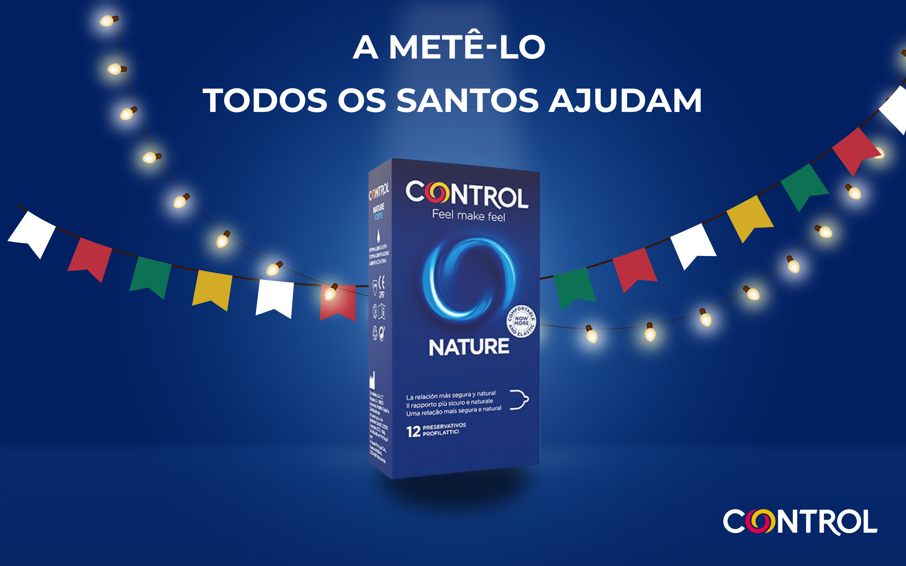

"Não é santo, mas ajuda à festa."
Headline — Campanha Lub Gel


A audácia de uma marca que não tem medo de pecar.

Os Santos Populares são o momento em que a tradição religiosa e a euforia profana colidem. Se Santo António é o santo casamenteiro, a Control é quem garante que o pecadilho da noite termina em segurança.
A estratégia focou-se em sequestrar a iconografia clássica — manjericos, luzes de arraial e o próprio caminho das marchas — para criar uma narrativa de facilitação do prazer com juízo.

Headline — Campanha Lub Gel